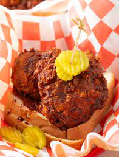

Nashville Hot Chicken

How to Make Nashville Hot Chicken
This recipe will show you how to make homestyle Nashville Hot Chicken made
with an authentic recipe of ingredients. This deep fried chicken is crunchy, spicy
and juicy in each and every bite. This recipe always brings me back to the days I lived in Nashville.
Ingredients
For the chicken:
- Bone-in chicken
- Dill pickle juice
- Sugar
- Buttermilk
- All-purpose flour
- Cornstarch
- Creole seasoning
- Peanut Oil
For the spicy oil:
- Reserved fry oil
- Brown sugar
Seasonings include:
- Cayenne pepper
- Smoked paprika
- Chili powder
- Garlic powder
- Salt
Steps
How to Brine Chicken for Frying
- First, warm the pickle juice on the stovetop or in the microwave. (It doesn’t need to boil,
but should be just hot enough to dissolve sugar.) Stir in the sugar until dissolved.
- Remove from the heat and allow the liquid to cool slightly. Then add the pickle juice brine
into a large zip bag. Add the chicken pieces and zip the bag closed, removing as much air as possible.
- Refrigerate for at least 1 hour, but longer is better. If you can brine the chicken for 8 hours or overnight,
that’s best for easy prep and the most flavorful chicken.
How to make the Nashville-Style Fried Hot Chicken
- Once the chicken has brined for 1 to 8 hours, set out two shallow dishes. Pour the buttermilk and hot sauce into
one shallow dish and mix well. In the second dish, combine the flour, cornstarch, and creole seasoning. Mix well.
- Now drain the brine off of the chicken, and set out a metal rack. Working one piece at a time, dunk the chicken in the
flour mixture, then in the buttermilk mixture, and then dip back in the flour mixture. This double coating dredge makes the crunchiest and crispiest fried chicken skin.
- Place the breaded chicken pieces on the wire rack as you go. Pro Tip: It’s good for the chicken breading to rest before frying in a pan, so don’t heat the oil until all the
chicken has been well coated.
- After all the chicken is breaded, set a large saucepot (or dutch oven) on the stovetop and clip a cooking thermometer to the side of the pot. Pour enough frying oil into the
pot to fill it about two-thirds full. Turn the heat on medium to medium-high and bring the oil to frying temperature.
- Meanwhile, preheat the oven to 250 degrees F. Set another rack on a baking sheet for the cooked fried chicken. You want to hold the chicken in the oven after frying to keep warm as you work in batches.
- Once the oil temperature reaches 350 degrees F, carefully place 3-4 pieces of chicken in the fry oil. Use tongs to move the chicken so it doesn’t stick to the bottom of the pot. Fry for 7-8 minutes, until golden brown.
- Use the tongs to carefully pull the chicken pieces from the hot oil and place them on the clean rack. Test the chicken with a meat thermometer… The largest pieces should be 165 degrees F inside.
- Then place the fried chicken in the oven to keep warm and crisp.
- Repeat with the remaining chicken pieces, continuing to place the fried chicken on the rack in the oven as they are cooked. Turn off the stovetop heat as soon as all of the chicken is done.
How to Make the Spicy Oil for the Fried Chicken
- Use a ladle to scoop ¾ cup of fry oil from the pot into a heat-proof mixing bowl or measuring cup. Add the cayenne pepper, smoked paprika, brown sugar, chili powder, garlic powder, and salt. Stir to mix thoroughly.
- When ready to serve, remove the rack from the oven and brush the spicy oil over all sides of the fried chicken pieces.